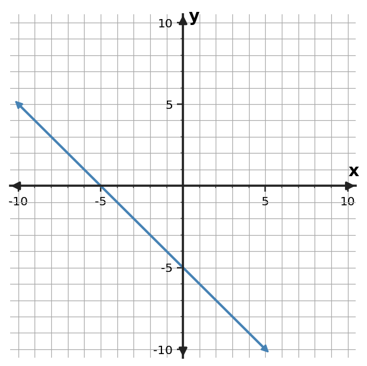
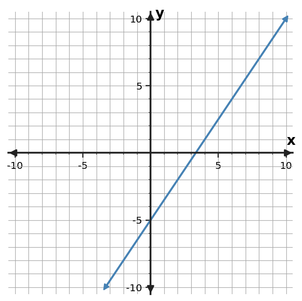

Algebra Practice 2.4 :::: Set 2
1. Relationship A is $y=2x+1$. Relationship B is shown in the table. Compare their rates of change and starting values.
| $x$ | B: $y$ |
|---|---|
| $0$ | $5$ |
| $2$ | $7$ |
| $4$ | $9$ |
2. Relationship A is $y=-x+8$. Relationship B is shown in the table. Compare their rates of change and starting values.
| $x$ | B: $y$ |
|---|---|
| $0$ | $10$ |
| $2$ | $6$ |
| $4$ | $2$ |
3. Relationship A is $y=-x+7$. Relationship B is shown in the table. Compare their rates of change and starting values.
| $x$ | B: $y$ |
|---|---|
| $0$ | $-3$ |
| $2$ | $1$ |
| $4$ | $5$ |
4. The graphed line is Relationship A. Relationship C is $y=\frac{1}{2}x+4$. Which has the greater rate of change? Compare their starting values as well.

5. The graphed line is Relationship A. Relationship C is $y=2x+1$. Which has the greater rate of change? Compare their starting values as well.

6. The graphed line is Relationship A. Relationship C is $y=-x+3$. Which has the greater rate of change? Compare their starting values as well.

7. Compare the two linear relationships. Do not judge by the size of one displayed output; use rate and starting value.
| A: $x$ | A: $y$ |
|---|---|
| $0$ | $10$ |
| $2$ | $8$ |
| $4$ | $6$ |
| B: $x$ | B: $y$ |
|---|---|
| $0$ | $6$ |
| $3$ | $\frac{9}{2}$ |
| $6$ | $3$ |
8. Compare the two linear relationships. Do not judge by the size of one displayed output; use rate and starting value.
| A: $x$ | A: $y$ |
|---|---|
| $0$ | $3$ |
| $2$ | $7$ |
| $4$ | $11$ |
| B: $x$ | B: $y$ |
|---|---|
| $0$ | $0$ |
| $3$ | $9$ |
| $6$ | $18$ |
9. Compare the two linear relationships. Use rate and starting value rather than one displayed output.
| A: $x$ | A: $y$ |
|---|---|
| $0$ | $8$ |
| $2$ | $6$ |
| $4$ | $4$ |
| B: $x$ | B: $y$ |
|---|---|
| $0$ | $0$ |
| $3$ | $6$ |
| $6$ | $12$ |
10. Plan A starts at 60 dollars and gains 3 dollars per week. Plan B starts at 86 dollars and gains 2 dollars per week. Compare the rates and starting values. Which feature answers “changes faster,” and which answers “starts larger”?
11. Plan A starts at 38 dollars and gains 5 dollars per week. Plan B starts at 66 dollars and gains 6 dollars per week. Compare the rates and starting values. Which feature answers “changes faster,” and which answers “starts larger”?
12. Plan A starts at 21 dollars and gains 6 dollars per week. Plan B starts at 37 dollars and gains 8 dollars per week. Compare the rates and starting values. Which feature answers “changes faster,” and which answers “starts larger”?
13. At input $x=6$, Relationship A has output 43 and Relationship B has output 12. A student says the relationship with the larger output at this one input must always have the greater rate of change. Critique the claim and state what evidence is needed.
14. At input $x=2$, Relationship A has output 38 and Relationship B has output 23. A student says the relationship with the larger output at this one input must always have the greater rate of change. Critique the claim and state what evidence is needed.
15. At input $x=2$, Relationship A has output 29 and Relationship B has output 10. A student says the relationship with the larger output at this one input must always have the greater rate of change. Critique the claim and state what evidence is needed.
16. For Relationship A, $y=2x-3$, and Relationship B, $y=3x-5$, find the input where their outputs are equal and identify which relationship has the greater rate of change.
17. For Relationship A, $y=3x+3$, and Relationship B, $y=x+11$, find the input where their outputs are equal and identify which relationship has the greater rate of change.
18. For Relationship A, $y=3x+2$, and Relationship B, $y=x+14$, find the input where their outputs are equal and identify which relationship has the greater rate of change.
19. A relationship is represented by $y=|x|$. Identify its function family and give one feature that supports your choice.
20. A relationship is represented by $y=|x-5|+1$. Identify its function family and give one feature that supports your choice.
21. A relationship is represented by $y=|x+3|$. Identify its function family and give one feature that supports your choice.
22. Using rate and starting value, compare Relationship A, $y=3x-3$, with Relationship B, $y=x+9$, and state one conclusion supported by those two models.
23. Using rate and starting value, compare Relationship A, $y=-x+8$, with Relationship B, $y=5x-3$, and state one conclusion supported by those two models.
24. Using rate and starting value, compare Relationship A, $y=3x+1$, with Relationship B, $y=2x+10$, and state one conclusion supported by those two models.